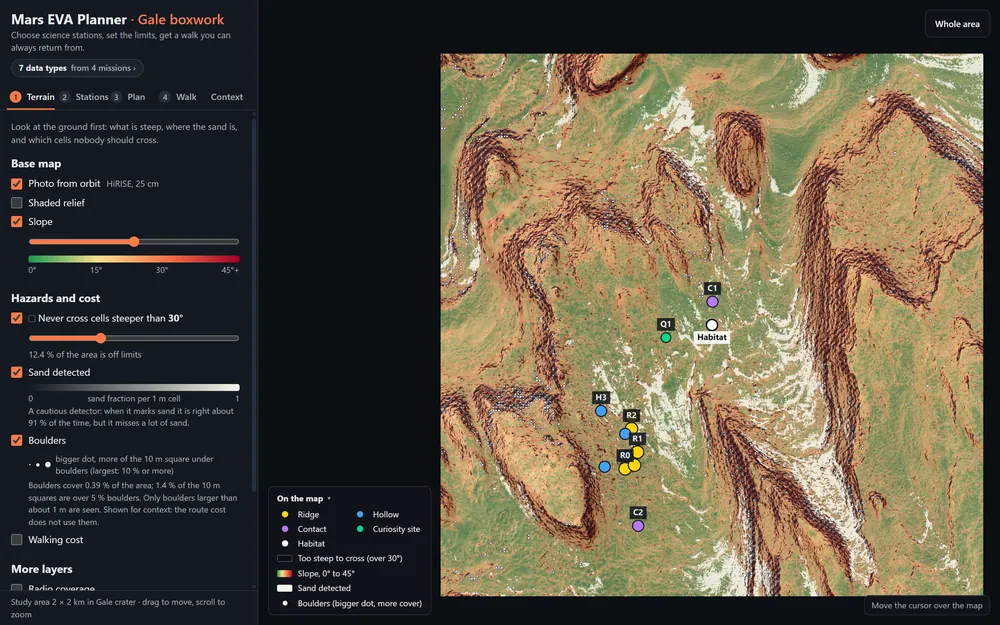

Step 1: Terrain
30 s- Press
- In 1 Terrain, switch on Sand detected and Boulders over the Slope.
- Look for
- The 1 m elevation model misses the 1–3 m boxwork ridges; the 25 cm photo shows them. Boulders are context, not part of the route cost.
